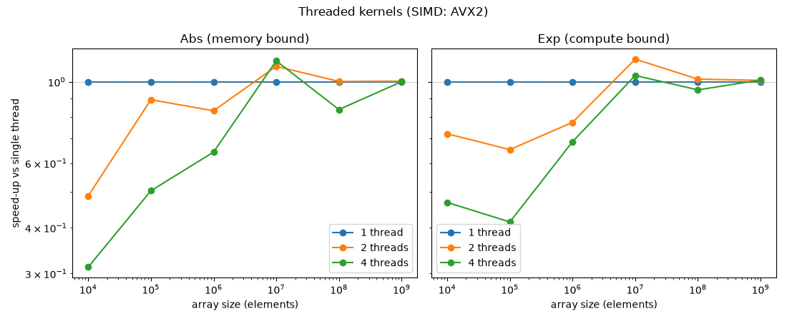

Note
Go to the end to download the full example code.
Is it worth parallelizing the kernels?#
The onnx-light-cpu kernels are already SIMD-accelerated, but each call
runs on a single thread. This example answers a natural follow-up question:
does spreading an array across several threads make the kernels faster?
The Python bindings release the GIL while a kernel runs, so several threads can
execute the same kernel on disjoint chunks of an array at the same time. A
tiny helper reproduces exactly that: the input is split once into n
contiguous chunks (cheap views, no copy) and the kernel is run on every chunk
from a ThreadPoolExecutor.
Two operators are compared because they sit at opposite ends of the compute/memory spectrum:
Absis memory-bandwidth bound - it does almost no arithmetic per element, so a single thread already gets close to saturating the memory bus on small arrays.Expis compute bound - it evaluates a polynomial per element, so the work parallelizes across cores more readily.
The take-away, visible in the plot below: threading only pays off for
large arrays. For small ones the thread-pool overhead dwarfs the kernel and
makes parallelism a net loss, and the compute-bound Exp starts benefiting at
a smaller array size than the memory-bound Abs.
Setup#
Import the compiled kernels and report the SIMD level and the number of CPUs available for the thread pool.
import os
import time
from concurrent.futures import ThreadPoolExecutor
import numpy as np
from onnx_light_cpu.onnx_py._cpukernels import (
abs as cpu_abs,
detect_simd_level,
exp as cpu_exp,
has_cpu_kernels,
)
_SIMD_NAMES = {0: "scalar", 1: "SSE2", 2: "AVX", 3: "AVX2", 4: "AVX-512"}
assert has_cpu_kernels()
level = detect_simd_level()
simd_name = _SIMD_NAMES.get(level, level)
n_cpus = os.cpu_count() or 1
# Cap the number of worker threads so the example stays quick on big machines.
max_threads = min(8, n_cpus)
print(f"SIMD level: {level} ({simd_name}), {n_cpus} CPUs, up to {max_threads} threads")
SIMD level: 3 (AVX2), 4 CPUs, up to 4 threads
Timing helper#
Each candidate is called repeat times and the best (minimum) wall-clock
time is kept to reduce scheduling noise.
def measure(func, repeat):
best = float("inf")
for _ in range(repeat):
start = time.perf_counter()
func()
best = min(best, time.perf_counter() - start)
return best
Run the benchmark#
For a handful of array sizes and thread counts, measure both kernels and
record the speed-up relative to the single-threaded baseline. The chunks are
produced once, before timing, with numpy.array_split() (which returns
views, so no data is copied) to isolate the kernels’ own parallel scaling.
Every parallel result is checked against the single-threaded one so
correctness is verified alongside the timing.
thread_counts = sorted({1, 2, 4, max_threads})
sizes = [10**k for k in range(4, 10)]
rng = np.random.default_rng(0)
cases = [("Abs (memory bound)", cpu_abs), ("Exp (compute bound)", cpu_exp)]
results = {name: {n: [] for n in thread_counts} for name, _ in cases}
with ThreadPoolExecutor(max_workers=max_threads) as pool:
for name, kernel in cases:
print(f"\n{name}")
for size in sizes:
x = rng.uniform(-10.0, 10.0, size=size).astype(np.float32)
expected = kernel(x)
repeat = max(3, min(100, 5_000_000 // size))
baseline = None
line = [f"size={size:>8}"]
for n in thread_counts:
chunks = np.array_split(x, n)
def run(chunks=chunks, kernel=kernel):
return list(pool.map(kernel, chunks))
assert np.array_equal(np.concatenate(run()), expected), (name, size, n)
t = measure(run, repeat)
if n == 1:
baseline = t
speedup = baseline / t
results[name][n].append(speedup)
line.append(f"{n}t={speedup:4.2f}x")
print(" | ".join(line))
Abs (memory bound)
size= 10000 | 1t=1.00x | 2t=0.49x | 4t=0.31x
size= 100000 | 1t=1.00x | 2t=0.89x | 4t=0.50x
size= 1000000 | 1t=1.00x | 2t=0.83x | 4t=0.64x
size=10000000 | 1t=1.00x | 2t=1.10x | 4t=1.14x
size=100000000 | 1t=1.00x | 2t=1.00x | 4t=0.84x
size=1000000000 | 1t=1.00x | 2t=1.00x | 4t=1.00x
Exp (compute bound)
size= 10000 | 1t=1.00x | 2t=0.72x | 4t=0.47x
size= 100000 | 1t=1.00x | 2t=0.65x | 4t=0.41x
size= 1000000 | 1t=1.00x | 2t=0.77x | 4t=0.69x
size=10000000 | 1t=1.00x | 2t=1.15x | 4t=1.04x
size=100000000 | 1t=1.00x | 2t=1.02x | 4t=0.95x
size=1000000000 | 1t=1.00x | 2t=1.01x | 4t=1.01x
Plot the speed-ups#
One panel per operator: the x-axis is the array size (log scale) and each
curve is a thread count, plotted as speed-up over the single-threaded kernel.
A flat line at 1 marks “no gain from threads”. Both operators dip below
1 for small arrays (thread overhead) and rise above it for large ones,
with Exp crossing the break-even point earlier than Abs.
import matplotlib.pyplot as plt
fig, axes = plt.subplots(1, len(cases), figsize=(11, 4.5), sharey=True)
for ax, (name, _) in zip(axes, cases, strict=True):
for n in thread_counts:
ax.plot(sizes, results[name][n], "o-", label=f"{n} thread{'s' if n > 1 else ''}")
ax.axhline(1.0, color="grey", linewidth=0.8, linestyle=":")
ax.set_xscale("log")
ax.set_yscale("log")
ax.set_xlabel("array size (elements)")
ax.set_title(name)
ax.legend()
axes[0].set_ylabel("speed-up vs single thread")
fig.suptitle(f"Threaded kernels (SIMD: {simd_name})")
fig.tight_layout()
plt.show()

Total running time of the script: (0 minutes 48.355 seconds)